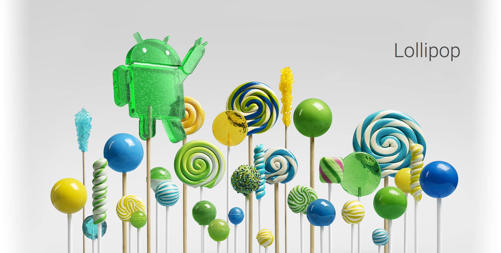

Material Design
Vem är jag?
Mattias Wikström
28 år
Umeå
(men ibland Tokyo...)
Tidigare erfarenheter?
HTML-pillande på pojkrummet


Material Design



Material is the metaphor


Motion provides meaning
Massa och vikt
BRA
DÅLIGT
Övergångar med mening
BRA
DÅLIGT
BRA
DÅLIGT
Rörelse som ett verktyg
BRA
DÅLIGT
Sammanfattning
Koppla till verkligheten
Meningsfulla animationer
Rörelse som ett verktyg